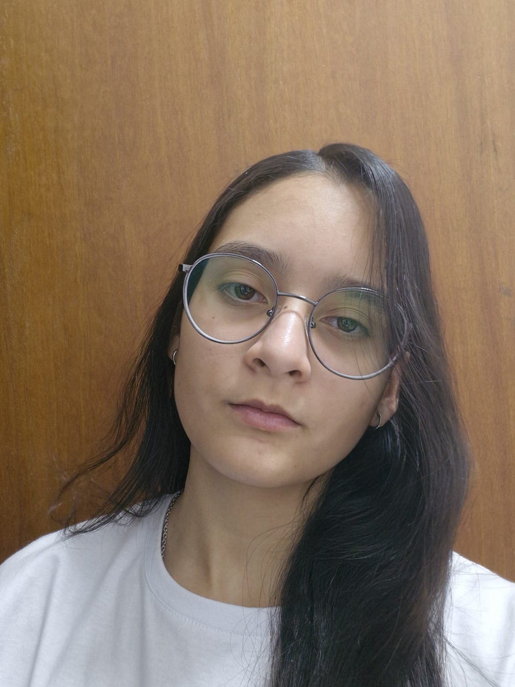

18 anos • Portfólio Profissional • TI
Formada no ensino médio técnico em Eletrotécnica pelo SESI de Sobradinho, com grande interesse na área de Tecnologia da Informação e desenvolvimento profissional contínuo.
Participação em projetos de robótica no primeiro ano do ensino médio.